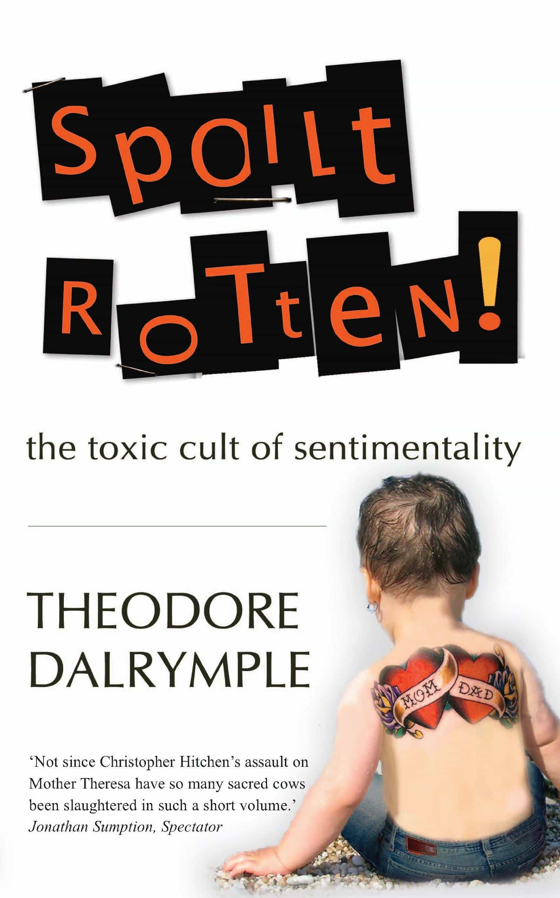

Lloyd Cobb is a renegade Philistine who is still acquiring a taste for everything. He reads more languages than he speaks and hikes when the mood prompts him.


To say that Return Of Kings encourages sentimentality toward women would be beyond ludicrous. However, Theodore Dalrymple’s book Spoilt Rotten: The Toxic Cult of Sentimentality reveals ways in which much of the modern West is polluted by excess feeling, whether we suffer from a surfeit of emotion individually or not.

An illustrative early example is of a British father who reacted with fury when his young daughter found a chicken foot in her chicken dinner. The father loudly took the supermarket to task, no doubt “seeing green” in anticipation of the pain-and-suffering money coming his way if he screamed hard enough.
Of course, the daughter was never in danger of any real pain or suffering at the sight of a chicken appendage: on my first visit to an authentic Chinese restaurant, I crunched up several chicken feet and swallowed them, bones and all, before someone informed me of the right way to eat them. But according to Pop, the little British girl was apoplectic with grief, and the whole family followed her lead. Even if they made it all up, one can glean a lot from their confidence that others would believe them.
Further on, Dalrymple skewers the argument in Steven Pinker’s The Language Instinct—that children naturally learn enough language to suit their needs and therefore that imposing a standard language on them in school is cruel somehow—by pointing out that Pinker’s book is written in the ultimate stick-up-ass idiom, academic English, which no one on Earth speaks in or learns by osmosis as a child.
Pinker’s response (“Of course people should be taught a standard language”) calls to mind feminists who, after about seventy years, still can’t decide if men and women are 100 percent equal, or if women are superior. Actually, they’ve always believed the latter. The former is mere rhetoric.
Dalrymple correctly pins the blame for murderous sexual jealousy on sentimentality as well; when long-term sexual relationships have to be based on fiery passion rather than, say, the ability of two people to get along and manage life together, it’s easy come and easy go; the moment you bore me, I’m out of here.
This makes the need for complete sexual possession of the other person all the more preoccupying and painful because it’s exclusively up to the individual. A man can’t count on society to have his back when it comes to a woman not cheating on him or dumping him, so he shoulders the entire burden himself, often with tragic results.
What the author has to say about our current pedophilia obsession may not sit well with many readers, but nevertheless has long needed saying: “I am not sure whether the supply [of vulnerable children] creates the demand or the demand the supply.”
Amen to that. I remember reading about one of the many, many incidents of Muslim rape gang grooming of young British girls. This particular case got started when an oily driver tempted a girl in her early teens with a gift of vodka at two in the morning. My first question was, “What kind of parents would even let their teen daughter get into a situation where she could accept booze from strange men in the small hours of the morning?” The answer, apparently, is “British ones.”
Of course, the girl’s biological parents never intended for her to be exposed to abuse from a predatory man with cultural and racial contempt for her oozing out of every pore, but she ended up that way nevertheless due to a combination of sentimental education—which believes children should not be controlled in any way—and sentimentalized romantic conventions, which state that a passionless relationship between adults should be ended, the effects on their children notwithstanding. This results in thousands of neglected children roaming the streets and entering the radar of the Rotherham set.
And all of this is just in the introduction.
The book’s six chapters take on varying aspects of our culture’s contempt for emotional control and how they affect us all: the fatuous family impact statements read in court after murder trials; Madeleine McCann and Princess Diana in relation to the cult of the victim; and Western politicians generously volunteering taxpayers’ money to aid Africans (actually, African politicians).
Stylistically, it’s classic Dalrymple: “How is poverty to be eliminated from the repertoire of possible human conditions?…The answer is obvious: aging pop stars are to give a series of concerts…”
Oddly tacked on after the conclusion is a short essay entitled, “Why We Need Immigrants.” The thesis is explanatory rather than argumentative: we need immigrants to care for our elderly invalid relatives because the attitude of our own people is all wrong.
We can’t tell the difference between service and servitude, and our sentimentalized governments are all too happy to let us stay unemployed (and import more foreign workers), rather than ask us to work a job we don’t enjoy, like taking care of demanding old bags and geezers.
Unfortunately, this final piece seems like a bit of CYA on the author’s part, since the conclusion speaks critically of multiculturalism. But maybe Dalrymple is trying to suggest that we hypocritically pour sentimentality all over the youth aspects of our culture while neglecting the one area where a little excess feeling might be useful: helping make our parents’ and grandparents’ final days as comfortable as possible.

If you’re like me, you’re not quite in panic mode, but Mom and Dad aren’t getting any younger. The Baby Boomers’ narcissism means they are staying healthy longer, but yoga and vitamins can’t stave off aging forever.
I contrast my own attitude and that of many peers with the Mexicans in an American hospital who wanted to do so much for their Mama that they became a pain in the ass to the staff, even carrying Mama to the toilet against doctor’s orders. Can you see yourself doing that? Have you ever changed a diaper—much less an adult one—with a cheerful spirit?
Maybe the post-game of game is to find a woman with whom to start a project with a twofold goal: to care for both of your elderly parents and to have children who will do the same for you when the time comes. Here if nowhere else, a little treacly sentimentality wouldn’t hurt.
Read More: How Girl Power Is Ruining Western Culture